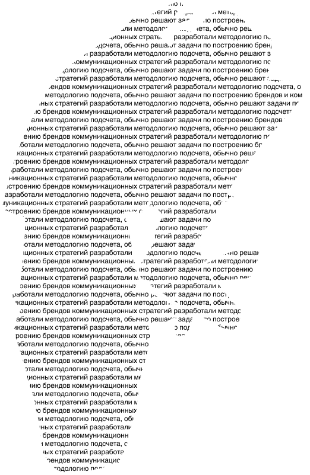
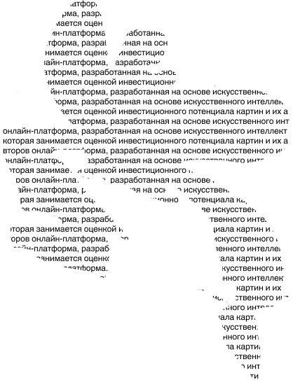
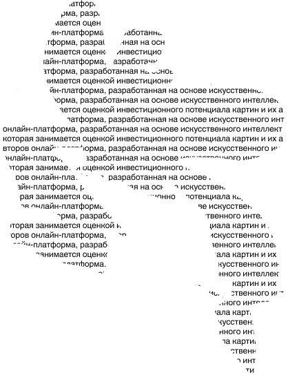

МИССИЯ ВЫПОЛНИМА: ПРОДАТЬ ЦЕННИК
В одном из корнеров Cosmoscow 2023 посетители находили
ценник. Центральный и единственный предмет экспозиции — стеклянный
куб со счетчиком, показывающий общий объем рынка современного
искусства в России за последний год. Он призывал посчитать цену
современного искусства в России и найти решение для прозрачности
рынка.
На Cosmoscow 2023 был стеклянный куб со счетчиком, показывающим
объем рынка современного искусства в России за последний год.
Посетители могли подумать о прозрачности рынка и цене современного
искусства в стране.
REDKEDS CHARISMA
ОТКУДА ВЗЯЛАСЬ ИДЕЯ ПРОДАТЬ ЦЕННИК?
В ближайшие годы нас ждет долгий и витиеватый путь к
стабилизации российского арт-рынка: важнейшей частью такой
«стабилизации» является уровень его прозрачности. Чтобы
рассчитать стоимость российского рынка искусства приходится
апеллировать к открытым источникам, и уже на этом этапе
начинаются определенные проблемы. Не каждая российская галерея и
художник продают свои картину «в белую», многие из
представителей арт-сферы предпочитают оставаться в серой зоне.
Мы поговорили Денисом Башевым и Сергеем Рожиным о том, как на
современном арт-рынке чувствует себя художник и почему
продавать свои работы в «белую» — это круто? А также о
проблемах в взаимоотношениях между галереями и
художниками.
В арт-рынке России важна прозрачность. Проблема заключается в
том, что не все галереи и художники продают свои работы "в
белую".
Мы поговорили с художниками о проблемах в отношениях с
галереями и преимуществах продажи работ "в белую".
- 67,8 млрд долларов Международный оборот искусства в 2022
- 45% Рыночная доля арт-рынка США от мирового
- 2,7 млрд долларов Pынок современного искусства принес в сезоне июль 2020 — июнь 2021
- 54% Mировой oборот аукционных продаж современного искусства США и Великобритании
Ди (Денис Башев)
Когда начинаешь заниматься искусством, возникает вопрос
о ценности своей работы и возможности заработка. Денис Башев
Когда ты только начинаешь заниматься современным искусством, непонятно, как себя оценивать и как к себе относиться. Если ты хочешь делать это серьезно, но у тебя при этом нет средств к существованию, чтобы можно было просто жить и творить, не думая о том, на что покушать, то у тебя явным образом возникает вопрос: сколько стоит то, что ты делаешь? И начнешь ли ты посредством этого когда-нибудь зарабатывать? Финансовый вопрос интересует людей даже на старте. Денис Башев
Сколько стоит моя жизнь, время других художников. Я начал задавать эти вопросы, но понял, что нет легальных данных. Люди продают произведения искусства, но никто не продавал ценник к чему-либо. Мы подумали, что это хорошая метафора: продать ценник, который бы отражал стоимость всего рынка современного искусства в России. Денис Башев
Разумно задаться вопросом, сколько стоит моя жизнь, время других художников, как соотнести их вместе, во что это выливается, какой объем рынка, куда ты попадаешь. Я начал задавать эти вопросы, не нашел на них ответа. Понял, что нет легальных данных, есть разные мнения людей, есть данные, основанные лишь на части рынка. Так и пришел к идее сделать точку входа в виде цены. Потом стало понятно, что никто еще не продавал ценник. Люди продают произведения искусства, но никто не продавал ценник к чему-либо. Мы подумали, что это хорошая метафора: продать ценник, который бы отражал стоимость всего рынка современного искусства в России. Денис Башев
Белый рынок дает понятные правила, инструменты для развития, в отличие от теневой экономики. Серый и черный рынок приносят лишь краткосрочную прибыль и препятствуют росту. В долгую же — рост рынка, который будет в разы больше, чем то, что ты отдаешь налогами. Что ты купишь на эти деньги? Еще одну квартиру? Машину? Зачем за это рубиться? Денис Башев
Белый рынок — это круто. Ты ничего не прячешь, у тебя есть понятные для всех правила игры. Ты получаешь инструменты, которые теневая экономика тебе не может дать. Серый и черный рынок интересен только в плане краткосрочной прибыли, ты не платишь с этого налоги. Других плюсов у этого нет. Но в перспективе то, что ты не заплатил налоги сейчас, но при этом продолжаешь играть в долгую, лишает тебя возможности роста. Ты просто получаешь краткосрочную прибыль. В долгую же — рост рынка, который будет в разы больше, чем то, что ты отдаешь налогами. Что ты купишь на эти деньги? Еще одну квартиру? Машину? Зачем за это рубиться? Денис Башев
А работать над художником никто не хочет. Это отдельная работа, это энтузиазм. И часто происходит ситуация, что берут тех, кто хорошо продается. Сергей Рожин
Качество избирательства в искусстве упало. Художники, такие как Алекс Монополия и Бэнкси, следуют трендам, не показывая настоящего вкуса. Сергей Рожин
Он был всегда цирком с конями, и всегда было кумовство. В принципе, так же все и осталось. Сейчас просто качество избирательства искусства сильно упало. Именно искусство держится на коллекционерах и людях, которые имеют вкус, которые могут показать и повлиять на арт-рынок, а не просто следовать трендам, как, например, Алекс Монополия или Бэнкси, которые, по сути, довольно безвкусные художники. Сергей Рожин
Сергей Рожин
ПРОБЛЕМЫ С КОТОРЫМИ СТАЛКИВАЮТСЯ НОСИТЕЛИ ИСКУССТВА?
Human Code

- Рынок не мыслит художниками.
- Что такое рынок искусства? основные деньги крутятся в консалтинге, в логистике, в работе галерей, билеты на выставки. и это около 95% рынка.
- Прозрачность — как проверить, что картина действительно продается? Когда мы говорим о деньгах, кажется, что это что-то нечистое. Human Code
В мире арта, по крайней мере в России, многое покрыто тайной: не все данные открыты и доступны, не все данные известны. Блокчейн помогает решить эту проблему. MyInvest.Art
 

MyInvest.Art

Ди
Люди не хотят инвестировать в современных художников России, потому что непонятно, во-первых, что с ними происходит, ты не видишь их творчество в разрезе времени, у тебя нет статистики, сколько стоили их работы год назад, сколько стоят они сейчас, ты не понимаешь, как это растет и меняется. Ты не понимаешь объемов рынка, у тебя нет представления, насколько твои инвестиции будут прибыльными, ты не можешь оценить значимость этого рынка. Инвесторам надо понимать, куда они вкладывают деньги.
Эта информация должна быть подтверждена. Если получится так, что рынок современного искусства России станет белым, если сделки перестанут совершаться в серую, то это позволит привлечь больше художников и больше инвесторов
и сделать все очень понятным в разрезе времени, увидеть, как меняются цены, растет стоимость художников, можно будет видеть динамику. Денис Башев
Люди не хотят инвестировать в современных художников России из-за отсутствия прозрачности в рынке искусства. Они
не могут оценить рост и изменения цен на работы художников,
не видят объемы рынка и не уверены в прибыльности инвестиций. Если рынок станет более прозрачным, это привлечет больше художников и инвесторов,
и позволит отслеживать динамику изменения цен
и стоимости работ художников. Денис Башев
КАКОЙ ВЫХОД?
Для формирования итоговой стоимости на объекте команда Human
Code и Myinvest.Art взяли три источника:
-
01
Точная стоимость аукционных продаж с 18 октября 2022 по 8 августа 2023. Общая сумма продаж составила: 170 375 022.00 руб.Продажи на аукционах в период с 18.10.2022 по 8.08.2023 составили 170 375 022 руб. -
02
Оценка продаж на ярмарках Cosmoscow и blazar. Оценка продаж на ярмарке blazar составила 40 млн руб в 2022 и 46 млн руб в 2023. Так как мы считаем стоимость за год, а blazar в 2023 уже прошел, мы включаем его стоимость в рейтинг. Оценка продаж на Cosmoscow проводилась из косвенных источников и составила 216 млн. руб. по версииПродажи на ярмарке blazar составили 40 млн руб в 2022 и 46 млн руб в 2023, а на Cosmoscow - 216 млн руб. -
03
Поправочный годовой остаток, рассчитанный исходя из среднего количества сделок в день в октябре и августе, а также исходя из добавочной суммы сделок вне ярмарок за сентябрь.Годовой остаток, рассчитанный на основе среднего количества сделок ежедневно в октябре и августе, а также с добавочной суммы сделок вне ярмарок за сентябрь.
Ди
В какой-то момент количество людей, кто хочет белого рынка, перевалит критическую точку. Кто станет тем самым человеком или группой, кому удастся сдвинуть в сторону весь рынок, никто не знает, но это не значит, что не надо совершать попытки. Рынок становится цивилизованнее, когда все в черную — рынок деградирует, люди не обсуждают искусство публично, не знают, что происходит внутри. А белый рынок понятный, там есть правила игры, которые соответствуют времени, законам, развития общества, моральными принципами. Это интересно.
Денис Башев
Количество людей, желающих белого рынка искусства, достигнет критической точки, и кто-то сможет изменить весь рынок. Белый рынок делает искусство более цивилизованным и прозрачным, соответствующим правилам и моральным принципам. Денис Башев
Хочется чтобы проект стал вехой, чтобы он продолжался.
Human Code
Human Code